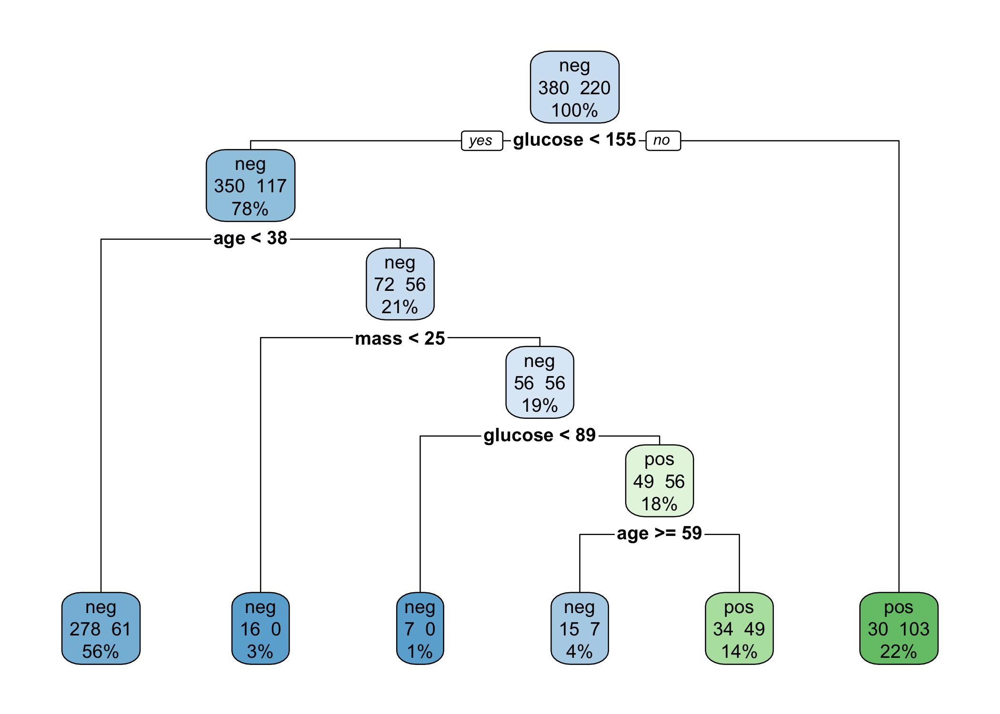
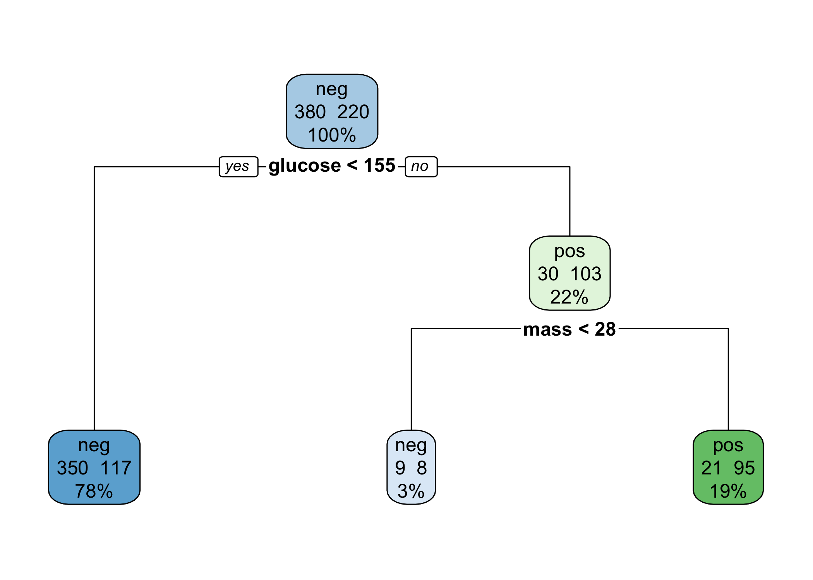
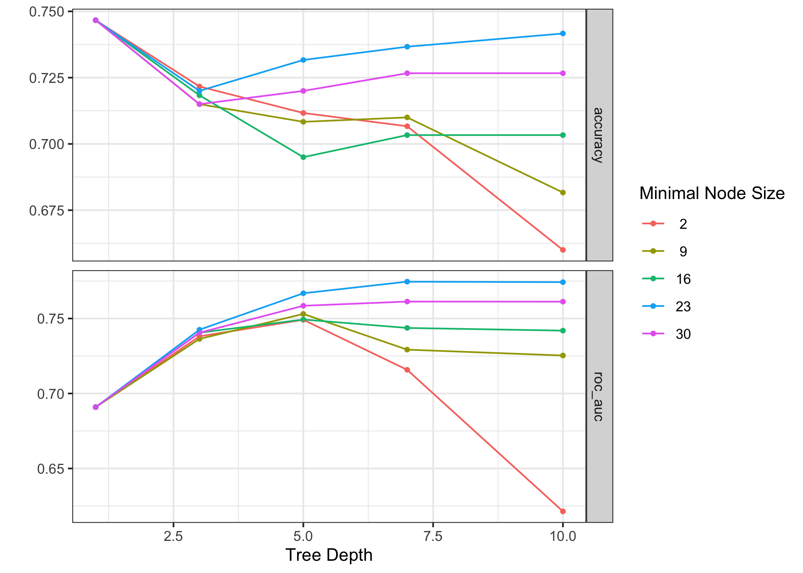
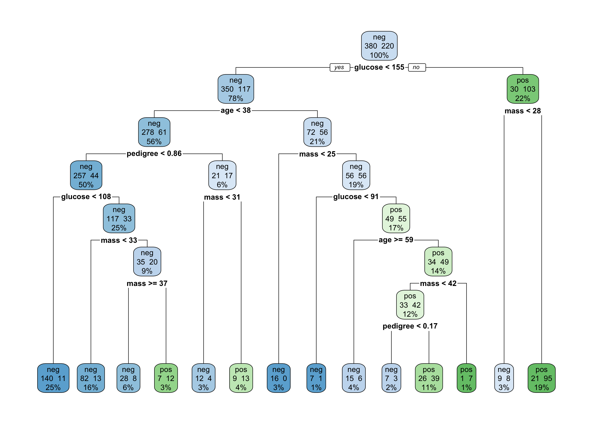
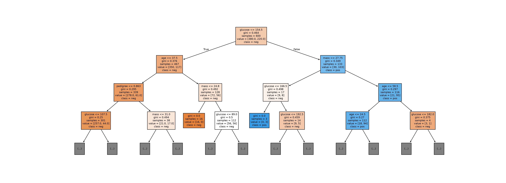
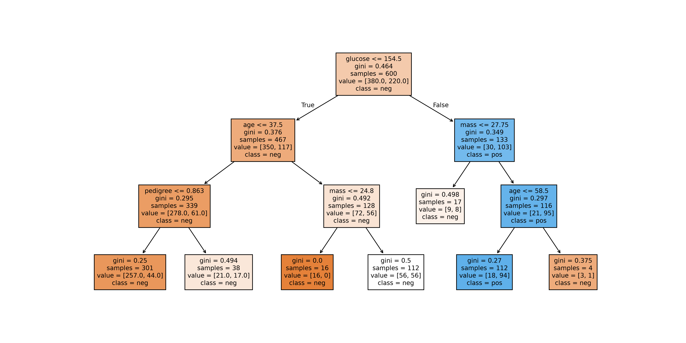
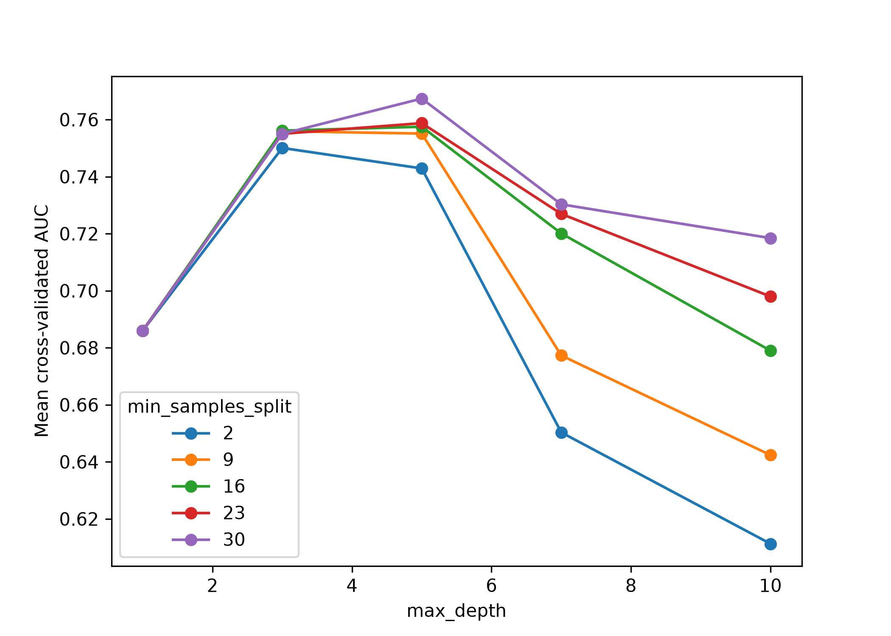

# Packages for this exercise. If one is missing, remove the # and run this line once:
# install.packages(c("tidyverse", "tidymodels", "rpart.plot"))
library(tidyverse)
library(tidymodels)
library(rpart.plot) # to draw a fitted rpart tree
theme_set(theme_bw()) # white background for every plot
options(pillar.sigfig = 3) # show three significant figures in tablesExercise 5.4 — Decision trees, overfitting and tuning
A decision tree classifies a person by asking a sequence of yes-or-no questions: is glucose above 128? If so, is body mass above 30? Each answer sends the person down one branch, until they reach a leaf, which gives a predicted class and a probability. Trees are easy to read, and they can model interactions and non-linear effects without being told to. Their weakness is that a tree can keep splitting until it has memorised the training rows. In this exercise we fit a tree, watch it overfit, restrain it by hand, and then let a grid search choose the restraint for us.
Theory: splits, nodes and leaves; tree depth and minimum node size as hyperparameters; overfitting in trees; grid search with cross-validation; the test set is used once, at the end.
NoteThe plots are for looking at
The code for every plot is folded away just above it, in case you are curious, and all of it is in the notebook linked at the top of each tab. You are not expected to write it yourself.
Download this exercise as an R Markdown notebook (.Rmd): the text and every code cell of the R version, including the code for the plots, with the blanks left for you to fill in. Open it in RStudio and run it a chunk at a time.
Packages and data
The same 750 people and split as Exercise 5.3, from data/diabetes_clean.csv, with the five predictors pregnant, glucose, mass, pedigree and age (triceps, insulin and blood pressure are left out because a zero there means “not measured”). The outcome has the levels neg then pos.
diabetes <- read_csv("data/diabetes_clean.csv") |>
select(pregnant, glucose, mass, pedigree, age, diabetes) |>
mutate(diabetes = factor(diabetes, levels = c("neg", "pos")))
test_rows <- seq(1, nrow(diabetes), by = 5) # every fifth person is held back
train <- diabetes[-test_rows, ]
test <- diabetes[test_rows, ]Part 1 — A basic decision tree
The same three pieces as for logistic regression: a model specification (now decision_tree() with the rpart engine), a recipe, and a workflow. The formula diabetes ~ . means “use every other column as a predictor”.
tree_spec_basic <- decision_tree() |>
set_engine("rpart") |>
set_mode("classification")
tree_rec <- recipe(diabetes ~ ., data = train)
tree_wf_basic <- workflow() |>
add_model(tree_spec_basic) |>
add_recipe(tree_rec)
tree_fit_basic <- tree_wf_basic |>
fit(data = train)
tree_fit_basic#> ══ Workflow [trained] ══════════════════════════════════════════════════════════
#> Preprocessor: Recipe
#> Model: decision_tree()
#>
#> ── Preprocessor ────────────────────────────────────────────────────────────────
#> 0 Recipe Steps
#>
#> ── Model ───────────────────────────────────────────────────────────────────────
#> n= 600
#>
#> node), split, n, loss, yval, (yprob)
#> * denotes terminal node
#>
#> 1) root 600 220 neg (0.6333333 0.3666667)
#> 2) glucose< 154.5 467 117 neg (0.7494647 0.2505353)
#> 4) age< 37.5 339 61 neg (0.8200590 0.1799410) *
#> 5) age>=37.5 128 56 neg (0.5625000 0.4375000)
#> 10) mass< 24.8 16 0 neg (1.0000000 0.0000000) *
#> 11) mass>=24.8 112 56 neg (0.5000000 0.5000000)
#> 22) glucose< 89 7 0 neg (1.0000000 0.0000000) *
#> 23) glucose>=89 105 49 pos (0.4666667 0.5333333)
#> 46) age>=59 22 7 neg (0.6818182 0.3181818) *
#> 47) age< 59 83 34 pos (0.4096386 0.5903614) *
#> 3) glucose>=154.5 133 30 pos (0.2255639 0.7744361) *Each line is a node: the split, the number of people who reach it, how many of them are misclassified, the predicted class and the two class proportions. A * marks a leaf. Drawing it is easier to read. extract_fit_engine() takes the fitted rpart tree out of the workflow:
tree_fit_basic |>
extract_fit_engine() |>
rpart.plot(extra = 101, roundint = FALSE)
Each box shows the predicted class, the number of people without and with diabetes who reach it, and their share of the training rows. The first split is on glucose: everything else depends on it.
rpart’s defaults stop the tree early: a split is only kept if it improves the fit by at least 1% (cost_complexity = 0.01), which is why this tree has only 6 leaves. To see what a tree does when nothing stops it, switch that rule off with cost_complexity = 0 and let any node with at least 2 people be split (min_n = 2). This is what scikit-learn’s default tree does, in the Python tab.
tree_spec_full <- decision_tree(cost_complexity = 0, min_n = 2) |>
set_engine("rpart") |>
set_mode("classification")
tree_fit_full <- workflow() |>
add_model(tree_spec_full) |>
add_recipe(tree_rec) |>
fit(data = train)
tree_full_frame <- extract_fit_engine(tree_fit_full)$frame # one row per node
sum(tree_full_frame$var == "<leaf>") # number of leaves#> [1] 149149 leaves for 600 people: too many to draw.
ImportantLearning points
- A tree splits the data with one yes-or-no question at a time; each leaf gives a predicted class and a probability.
- The first split is on the most useful predictor, here glucose.
- Default settings differ between packages: rpart stops early, scikit-learn grows the tree until the leaves are pure.
Part 2 — Does a tree that nothing stops overfit?
Predict the training and the test rows with the tree that nothing stopped. type = "class" uses the threshold 0.5 for us:
train_preds_full <- predict(tree_fit_full, new_data = train, type = "prob") |>
bind_cols(predict(tree_fit_full, new_data = train, type = "class")) |>
bind_cols(train)
test_preds_full <- predict(tree_fit_full, new_data = test, type = "prob") |>
bind_cols(predict(tree_fit_full, new_data = test, type = "class")) |>
bind_cols(test)
conf_mat(train_preds_full, truth = diabetes, estimate = .pred_class)#> Truth
#> Prediction neg pos
#> neg 380 0
#> pos 0 220On the training rows the tree makes no mistakes at all. The same metric set as Exercise 5.3, with pos as the event (the second level):
class_metrics <- metric_set(accuracy, precision, recall, sens, spec)
class_metrics(train_preds_full, truth = diabetes, estimate = .pred_class,
event_level = "second")#> # A tibble: 5 × 3
#> .metric .estimator .estimate
#> <chr> <chr> <dbl>
#> 1 accuracy binary 1
#> 2 precision binary 1
#> 3 recall binary 1
#> 4 sens binary 1
#> 5 spec binary 1Now the test rows:
# Replace every ______ below, then run this cell.
conf_mat(______, truth = diabetes, estimate = .pred_class)
class_metrics(______, truth = diabetes, estimate = .pred_class,
event_level = "second")Compare the basic rpart tree of Part 1, which its stopping rule had already restrained:
predict(tree_fit_basic, new_data = train, type = "class") |>
bind_cols(train) |>
accuracy(truth = diabetes, estimate = .pred_class)#> # A tibble: 1 × 3
#> .metric .estimator .estimate
#> <chr> <chr> <dbl>
#> 1 accuracy binary 0.78predict(tree_fit_basic, new_data = test, type = "class") |>
bind_cols(test) |>
accuracy(truth = diabetes, estimate = .pred_class)#> # A tibble: 1 × 3
#> .metric .estimator .estimate
#> <chr> <chr> <dbl>
#> 1 accuracy binary 0.787Training accuracy 0.780 and test accuracy 0.787: with 6 leaves the basic tree does not overfit at all.
Question! The tree that nothing stopped is perfect on the training rows and much worse on the test rows. What has it learned that does not carry over to new people?
ImportantLearning points
- A tree that is allowed to keep splitting fits the training rows almost perfectly and does worse on the test rows: it overfits.
- The bigger the gap between training and test performance, the more the model has memorised.
Part 3 — Restraining the tree by hand
Like the penalty in Exercise 5.2, a tree has hyperparameters: settings chosen before fitting that control how complex it can become. In tidymodels:
tree_depth: the maximum number of questions from the root to a leaf;min_n: the minimum number of people a node must hold before it may be split;cost_complexity: how much a split must improve the fit to be kept.
Set the first two by hand, to a shallow tree. Keep cost_complexity = 0, as for the tree that nothing stopped in Part 1, so that only the two settings we choose restrain the tree (the same as in scikit-learn); rpart’s 1% rule would otherwise cut this tree back to a single split.
tree_spec_shallow <- decision_tree(cost_complexity = 0, # no 1% rule, as in Part 1
tree_depth = 3, min_n = 20) |>
set_engine("rpart") |>
set_mode("classification")
tree_fit_shallow <- workflow() |>
add_model(tree_spec_shallow) |>
add_recipe(tree_rec) |>
fit(data = train)
tree_fit_shallow |>
extract_fit_engine() |>
rpart.plot(extra = 101, roundint = FALSE)
The shallow tree is small enough to read as a clinical rule. It has only three leaves, although it was allowed eight: rpart also drops a split when both of its sides would predict the same class, because it cannot reduce the number of mistakes. The scikit-learn tree in the Python tab keeps such splits, but predicts almost exactly the same classes. Evaluate it on both sets:
train_preds_shallow <- predict(tree_fit_shallow, new_data = train, type = "class") |>
bind_cols(train)
test_preds_shallow <- predict(tree_fit_shallow, new_data = test, type = "class") |>
bind_cols(test)
class_metrics(train_preds_shallow, truth = diabetes, estimate = .pred_class,
event_level = "second")#> # A tibble: 5 × 3
#> .metric .estimator .estimate
#> <chr> <chr> <dbl>
#> 1 accuracy binary 0.757
#> 2 precision binary 0.819
#> 3 recall binary 0.432
#> 4 sens binary 0.432
#> 5 spec binary 0.945class_metrics(test_preds_shallow, truth = diabetes, estimate = .pred_class,
event_level = "second")#> # A tibble: 5 × 3
#> .metric .estimator .estimate
#> <chr> <chr> <dbl>
#> 1 accuracy binary 0.733
#> 2 precision binary 0.783
#> 3 recall binary 0.340
#> 4 sens binary 0.340
#> 5 spec binary 0.948Training accuracy 0.757 in R and 0.760 in Python, test accuracy 0.733 in both (rpart also refuses to make a leaf with fewer than a third of min_n people, scikit-learn does not, so the two trees differ slightly). Compared with the tree that nothing stopped, training accuracy has dropped, because the model is simpler, and test accuracy has risen: the shallow tree generalises better. Try another setting yourself: a tree of depth 5 that may only split nodes holding at least 40 people.
# Replace every ______ below, then run this cell.
tree_fit_try <- workflow() |>
add_model(decision_tree(cost_complexity = 0, tree_depth = ______, min_n = ______) |>
set_engine("rpart") |>
set_mode("classification")) |>
add_recipe(tree_rec) |>
fit(data = train)
predict(tree_fit_try, new_data = train, type = "class") |>
bind_cols(train) |>
accuracy(truth = diabetes, estimate = .pred_class)
predict(tree_fit_try, new_data = test, type = "class") |>
bind_cols(test) |>
accuracy(truth = diabetes, estimate = .pred_class)
ImportantLearning points
- Hyperparameters such as the maximum depth and the minimum node size control how complex a tree can become.
- A simpler tree fits the training rows less well but can generalise better.
- Trying settings one by one, and judging them on the test rows, does not scale and spends the test set.
Part 4 — Tuning the hyperparameters with a grid search
Instead of guessing, try a grid of values and judge each combination without touching the test rows. In Exercise 5.2 each combination was judged on a single validation set; here we use every training row in turn. We split the training rows into 5 parts (folds); each combination is fitted 5 times, each time on four folds and evaluated on the fifth, and the 5 results are averaged. This is 5-fold cross-validation.
Mark the hyperparameters to be tuned with tune():
tree_spec_tune <- decision_tree(cost_complexity = 0, tree_depth = tune(), min_n = tune()) |>
set_engine("rpart") |>
set_mode("classification")
tree_wf_cv <- workflow() |>
add_model(tree_spec_tune) |>
add_recipe(tree_rec)
tree_grid <- grid_regular(tree_depth(range = c(1L, 10L)),
min_n(range = c(2L, 30L)),
levels = 5)
tree_grid#> # A tibble: 25 × 2
#> tree_depth min_n
#> <int> <int>
#> 1 1 2
#> 2 3 2
#> 3 5 2
#> 4 7 2
#> 5 10 2
#> 6 1 9
#> 7 3 9
#> 8 5 9
#> 9 7 9
#> 10 10 9
#> # ℹ 15 more rowsFive depths times five node sizes: 25 combinations, each fitted on 5 folds. vfold_cv() makes the folds; strata = diabetes keeps the share of people with diabetes the same in every fold. control_grid(event_level = "second") tells the tuning, like every yardstick call on this page, that pos is the event.
set.seed(123)
folds <- vfold_cv(train, v = 5, strata = diabetes)
tree_res <- tune_grid(
tree_wf_cv,
resamples = folds,
grid = tree_grid,
metrics = metric_set(roc_auc, accuracy),
control = control_grid(event_level = "second")
)
show_best(tree_res, metric = "roc_auc", n = 5)#> # A tibble: 5 × 8
#> tree_depth min_n .metric .estimator mean n std_err .config
#> <int> <int> <chr> <chr> <dbl> <int> <dbl> <chr>
#> 1 7 23 roc_auc binary 0.775 5 0.0182 pre0_mod19_post0
#> 2 10 23 roc_auc binary 0.774 5 0.0183 pre0_mod24_post0
#> 3 5 23 roc_auc binary 0.767 5 0.0176 pre0_mod14_post0
#> 4 7 30 roc_auc binary 0.761 5 0.0160 pre0_mod20_post0
#> 5 10 30 roc_auc binary 0.761 5 0.0160 pre0_mod25_post0autoplot(tree_res)
A depth of 1 (a single split on glucose) is clearly too simple. When small nodes may be split (min_n 2 or 9) the AUC falls again for deep trees, which overfit; with min_n 23 or 30 deeper trees hold their AUC, because the node size stops them splitting small groups. Select the best combination, put it into the workflow, and fit that one tree on all 600 training rows:
best_tree <- select_best(tree_res, metric = "roc_auc")
best_tree#> # A tibble: 1 × 3
#> tree_depth min_n .config
#> <int> <int> <chr>
#> 1 7 23 pre0_mod19_post0final_tree_fit <- finalize_workflow(tree_wf_cv, best_tree) |>
fit(data = train)
final_tree_fit |>
extract_fit_engine() |>
rpart.plot(extra = 101, roundint = FALSE)
The tuned tree is shown above. Now, and only now, use the test rows: evaluate the chosen tree once.
# Replace every ______ below, then run this cell.
train_preds_final <- predict(final_tree_fit, new_data = train, type = "prob") |>
bind_cols(predict(final_tree_fit, new_data = train, type = "class")) |>
bind_cols(train)
test_preds_final <- predict(final_tree_fit, new_data = ______, type = "prob") |>
bind_cols(predict(final_tree_fit, new_data = ______, type = "class")) |>
bind_cols(test)
class_metrics(test_preds_final, truth = diabetes, estimate = .pred_class,
event_level = "second")
roc_auc(train_preds_final, truth = diabetes, .pred_pos, event_level = "second")
roc_auc(test_preds_final, truth = diabetes, ______, event_level = "second")Cross-validation splits the training rows at random, and trees break ties between equal splits in different ways, so R and Python do not choose the same tree and their numbers differ.
Question! Compare the tuned tree with the basic tree of Part 2. Has the gap between training and test performance closed? Why must the test rows play no part in choosing tree_depth and min_n?
ImportantLearning points
- A grid search tries every combination of hyperparameter values and judges each by cross-validation on the training rows.
- Hyperparameter tuning is part of training: the test set must never be used to choose hyperparameters, only to evaluate the final model, once.
- Workflows (R) and pipelines (Python) keep the recipe and the model together, so the tuned model is fitted and evaluated exactly as it was tuned.
Download this exercise as a Jupyter notebook (.ipynb): the text and every code cell of the Python version, including the code for the plots, with the blanks left for you to fill in. Open it in Jupyter or VS Code and run it a cell at a time.
Packages and data
# Packages for this exercise. If one is missing, install it once from a terminal
# (in a Jupyter notebook, type %pip instead of pip):
# pip install pandas numpy matplotlib scikit-learn
import pandas as pd
import numpy as np
import matplotlib.pyplot as plt
from sklearn.tree import DecisionTreeClassifier, plot_tree
from sklearn.model_selection import GridSearchCV
from sklearn.metrics import accuracy_score, precision_score, recall_score
from sklearn.metrics import confusion_matrix, roc_auc_scoreThe same 750 people and split as Exercise 5.3, from data/diabetes_clean.csv, with the five predictors pregnant, glucose, mass, pedigree and age (triceps, insulin and blood pressure are left out because a zero there means “not measured”). The outcome is 1 for pos and 0 for neg.
diabetes = pd.read_csv("data/diabetes_clean.csv")
diabetes = diabetes[["pregnant", "glucose", "mass", "pedigree", "age", "diabetes"]]
diabetes["diabetes"] = (diabetes["diabetes"] == "pos").astype(int) # 1 = pos, 0 = neg
is_test = diabetes.index % 5 == 0 # every fifth person is held back
train = diabetes[~is_test]
test = diabetes[is_test]
predictors = ["pregnant", "glucose", "mass", "pedigree", "age"]Part 1 — A basic decision tree
A DecisionTreeClassifier() with its default settings, fitted on the five predictors. random_state fixes how ties between equally good splits are broken, so that the tree is the same every time.
tree_basic = DecisionTreeClassifier(random_state=123)
tree_basic = tree_basic.fit(train[predictors], train["diabetes"])
print("depth: ", tree_basic.get_depth())#> depth: 18print("leaves:", tree_basic.get_n_leaves())#> leaves: 151The default tree keeps splitting until every leaf is pure: it has grown to a depth of 18 with 151 leaves for 600 people. Draw the top three levels (max_depth=3 only limits the drawing, not the tree):
fig, ax = plt.subplots(figsize=(22, 8))
drawn = plot_tree(tree_basic, max_depth=3, feature_names=predictors,
class_names=["neg", "pos"], filled=True, fontsize=8, ax=ax)
plt.show()
In each box: the split, the Gini impurity (0 for a pure node), the number of people (samples), how many of them are without and with diabetes (value), and the predicted class. The first split is on glucose: everything else depends on it.
scikit-learn’s defaults grow the tree until every leaf is pure. R’s rpart stops early by default (a split is only kept if it improves the fit by at least 1%), so in the R tab the same data give a much smaller tree.
ImportantLearning points
- A tree splits the data with one yes-or-no question at a time; each leaf gives a predicted class and a probability.
- The first split is on the most useful predictor, here glucose.
- Default settings differ between packages: rpart stops early, scikit-learn grows the tree until the leaves are pure.
Part 2 — Does a tree that nothing stops overfit?
Predict the training and the test rows. predict() uses the threshold 0.5 for us:
train_preds_basic = train.copy()
train_preds_basic["prob"] = tree_basic.predict_proba(train[predictors])[:, 1]
train_preds_basic["pred_class"] = tree_basic.predict(train[predictors])
test_preds_basic = test.copy()
test_preds_basic["prob"] = tree_basic.predict_proba(test[predictors])[:, 1]
test_preds_basic["pred_class"] = tree_basic.predict(test[predictors])
confusion_matrix(train_preds_basic["diabetes"], train_preds_basic["pred_class"])#> array([[380, 0],
#> [ 0, 220]])The same metrics as Exercise 5.3. Remember that confusion_matrix() puts the truth in the rows. On the training rows the tree makes no mistakes at all:
truth, predicted = train_preds_basic["diabetes"], train_preds_basic["pred_class"]
print("accuracy: ", round(accuracy_score(truth, predicted), 3))#> accuracy: 1.0print("precision: ", round(precision_score(truth, predicted), 3))#> precision: 1.0print("sensitivity:", round(recall_score(truth, predicted), 3))#> sensitivity: 1.0print("specificity:", round(recall_score(truth, predicted, pos_label=0), 3))#> specificity: 1.0Now the test rows:
# Replace every ______ below, then run this cell.
truth, predicted = ______, test_preds_basic["pred_class"]
print(confusion_matrix(truth, predicted))
print("accuracy: ", round(accuracy_score(truth, predicted), 3))
print("precision: ", round(precision_score(truth, predicted), 3))
print("sensitivity:", round(recall_score(truth, predicted), 3))
print("specificity:", round(______, 3))Question! The tree is perfect on the training rows and much worse on the test rows. What has it learned that does not carry over to new people?
ImportantLearning points
- A tree that is allowed to keep splitting fits the training rows almost perfectly and does worse on the test rows: it overfits.
- The bigger the gap between training and test performance, the more the model has memorised.
Part 3 — Restraining the tree by hand
Like the penalty in Exercise 5.2, a tree has hyperparameters: settings chosen before fitting that control how complex it can become. In scikit-learn:
max_depth: the maximum number of questions from the root to a leaf;min_samples_split: the minimum number of people a node must hold before it may be split;ccp_alpha: how much a split must improve the fit to be kept.
Set the first two by hand, to a shallow tree:
tree_shallow = DecisionTreeClassifier(max_depth=3, min_samples_split=20, random_state=123)
tree_shallow = tree_shallow.fit(train[predictors], train["diabetes"])
fig, ax = plt.subplots(figsize=(14, 7))
drawn = plot_tree(tree_shallow, feature_names=predictors,
class_names=["neg", "pos"], filled=True, fontsize=9, ax=ax)
plt.show()
The shallow tree is small enough to read as a clinical rule. Most of its leaves predict neg; only people with high glucose and a high body mass are predicted to have diabetes. Evaluate it on both sets:
for name, data in [("train", train), ("test", test)]:
truth = data["diabetes"]
predicted = tree_shallow.predict(data[predictors])
print(name,
"accuracy", round(accuracy_score(truth, predicted), 3),
"precision", round(precision_score(truth, predicted), 3),
"sensitivity", round(recall_score(truth, predicted), 3),
"specificity", round(recall_score(truth, predicted, pos_label=0), 3))#> train accuracy 0.76 precision 0.839 sensitivity 0.427 specificity 0.953
#> test accuracy 0.733 precision 0.783 sensitivity 0.34 specificity 0.948Training accuracy 0.757 in R and 0.760 in Python, test accuracy 0.733 in both (rpart also refuses to make a leaf with fewer than a third of min_n people, scikit-learn does not, so the two trees differ slightly). Compared with the tree that nothing stopped, training accuracy has dropped, because the model is simpler, and test accuracy has risen: the shallow tree generalises better. Try another setting yourself: a tree of depth 5 that may only split nodes holding at least 40 people.
# Replace every ______ below, then run this cell.
tree_try = DecisionTreeClassifier(max_depth=______, min_samples_split=______, random_state=123)
tree_try = tree_try.fit(train[predictors], train["diabetes"])
print("train accuracy:", round(accuracy_score(train["diabetes"], tree_try.predict(train[predictors])), 3))
print("test accuracy: ", round(accuracy_score(test["diabetes"], tree_try.predict(test[predictors])), 3))
ImportantLearning points
- Hyperparameters such as the maximum depth and the minimum node size control how complex a tree can become.
- A simpler tree fits the training rows less well but can generalise better.
- Trying settings one by one, and judging them on the test rows, does not scale and spends the test set.
Part 4 — Tuning the hyperparameters with a grid search
Instead of guessing, try a grid of values and judge each combination without touching the test rows. In Exercise 5.2 each combination was judged on a single validation set; here we use every training row in turn. We split the training rows into 5 parts (folds); each combination is fitted 5 times, each time on four folds and evaluated on the fifth, and the 5 results are averaged. This is 5-fold cross-validation, and GridSearchCV() does all of it.
tree_grid = {"max_depth": [1, 3, 5, 7, 10],
"min_samples_split": [2, 9, 16, 23, 30]}Five depths times five node sizes: 25 combinations, each fitted on 5 folds. cv=5 makes the folds, keeping the share of people with diabetes the same in every fold; scoring="roc_auc" judges each combination by its AUC.
tree_search = GridSearchCV(DecisionTreeClassifier(random_state=123),
param_grid=tree_grid, cv=5, scoring="roc_auc")
tree_search = tree_search.fit(train[predictors], train["diabetes"])
tree_results = pd.DataFrame(tree_search.cv_results_)
tree_results = tree_results[["param_max_depth", "param_min_samples_split",
"mean_test_score", "std_test_score"]]
tree_results.sort_values("mean_test_score", ascending=False).head(5).round(3)#> param_max_depth param_min_samples_split mean_test_score std_test_score
#> 14 5 30 0.767 0.062
#> 13 5 23 0.759 0.074
#> 12 5 16 0.758 0.054
#> 7 3 16 0.756 0.047
#> 6 3 9 0.756 0.047fig, ax = plt.subplots()
for split in tree_grid["min_samples_split"]:
rows = tree_results[tree_results["param_min_samples_split"] == split]
ax.plot(rows["param_max_depth"], rows["mean_test_score"], marker="o", label=str(split))
ax.set_xlabel("max_depth")
ax.set_ylabel("Mean cross-validated AUC")
ax.legend(title="min_samples_split")
plt.show()
A depth of 1 (a single split on glucose) is clearly too simple, and so are deep trees that may split small nodes: the AUC falls as the tree gets deeper, unless min_samples_split is large. Select the best combination; GridSearchCV() has already refitted it on all 600 training rows (refit=True is the default):
print(tree_search.best_params_)#> {'max_depth': 5, 'min_samples_split': 30}print("cross-validated AUC:", round(tree_search.best_score_, 3))#> cross-validated AUC: 0.767final_tree = tree_search.best_estimator_
print("leaves:", final_tree.get_n_leaves())#> leaves: 15Now, and only now, use the test rows: evaluate the chosen tree once.
# Replace every ______ below, then run this cell.
test_prob = final_tree.predict_proba(test[predictors])[:, 1]
test_class = final_tree.predict(______)
train_prob = final_tree.predict_proba(train[predictors])[:, 1]
print("test accuracy: ", round(accuracy_score(test["diabetes"], test_class), 3))
print("test sensitivity:", round(recall_score(test["diabetes"], test_class), 3))
print("test specificity:", round(recall_score(test["diabetes"], test_class, pos_label=0), 3))
print("train AUC:", round(roc_auc_score(train["diabetes"], train_prob), 3))
print("test AUC: ", round(roc_auc_score(test["diabetes"], ______), 3))Cross-validation splits the training rows at random, and trees break ties between equal splits in different ways, so R and Python do not choose the same tree and their numbers differ.
Question! Compare the tuned tree with the basic tree of Part 2. Has the gap between training and test performance closed? Why must the test rows play no part in choosing tree_depth and min_n?
ImportantLearning points
- A grid search tries every combination of hyperparameter values and judges each by cross-validation on the training rows.
- Hyperparameter tuning is part of training: the test set must never be used to choose hyperparameters, only to evaluate the final model, once.
- Workflows (R) and pipelines (Python) keep the recipe and the model together, so the tuned model is fitted and evaluated exactly as it was tuned.
Stretch
NoteStretch — tune the pruning instead
Leave tree_depth and min_n at their defaults and tune cost_complexity instead (in Python, ccp_alpha), over the values 0.0001, 0.001, 0.01 and 0.1. Which value is chosen, how many leaves has the tuned tree, and how does its test AUC compare with the tree tuned above?